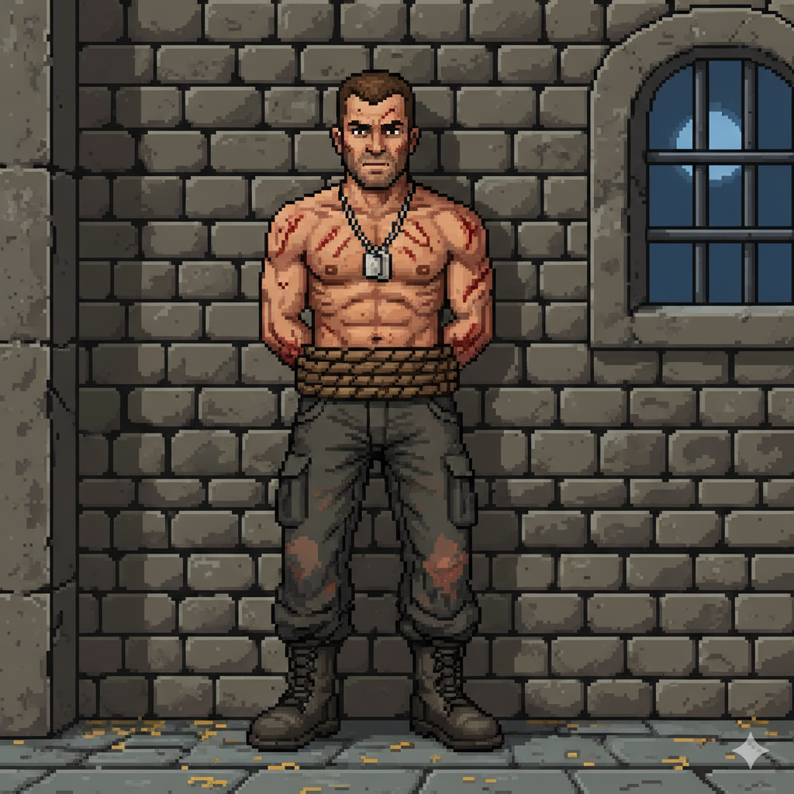

Sobre o Sargento Elias "Ghost" Vance
Elias Vance não é o típico fuzileiro barulhento e impulsivo. Ele é um veterano de operações especiais, conhecido por sua calma sob pressão e sua abordagem metódica. Cresceu em uma pequena cidade no meio-oeste, onde aprendeu o valor do trabalho duro e da comunidade. Sua experiência em combate o ensinou a ser autossuficiente e a pensar rapidamente, mas também o deixou com cicatrizes invisíveis. Ele não é de muitas palavras, preferindo observar e analisar antes de agir. Sua lealdade à sua equipe e à sua missão é inabalável, e ele se vê com um forte senso de dever. Ter sido capturado e preso em um castelo é um golpe duro para seu orgulho e sua psique, mas ele não vai desistir. Ele vê cada dia na prisão como uma nova oportunidade de encontrar uma fraqueza no inimigo ou uma rota de fuga.